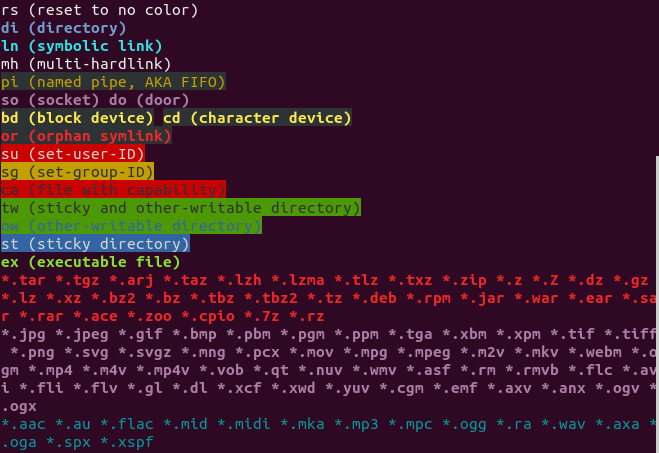

Course Sections
Here we present an overview of what each section talks about.
Section 1
UNIX and Linux History
Since this course might be someones first encounter with Linux it starts off teaching more about Linux and UNIX. It goes back in time and show how UNIX and Linux came to be.
Basic OS Concepts
General idea of what an OS is, it's attributions and it's key components.
Section 2
Virtual Machines
What is a Virtual Machine, how it functions and how to set one up running Linux.
Linux vs Windows
Main differences between most Linux distributions and Windows.
Linux Distributions
What are Linux distributions and some examples of the most important and well known ones.

Section 3
Using a Command Prompt
How to use a command prompt, general command prompt line interface and how to regain control of the prompt in case you lose it (ctrl+c).
Remote Access
How remote access of a Linux machine works and a easy use to do it using PuTTY.
Network Commands
It is presented two network commands in this section.
ip Command
The ip command is used to show and manipulate routing, network devices, interfaces and tunnels.
ip
ip route [command]
ifconfig Command
The ifconfig command is used to configure a network interface.
ifconfig
ifconfig up
Important Facts
Linux has some very specific characteristics:
- There is a super user in Linux known as root that can modify, create and delete accounts and configuration files;
- Linux is a case-sensitive system;
- It might have some problems with files that have space in their name.
Changing Passwords
To change an user password the passwd command.
passwd Command
passwd [options] [user-id]
Linux File System
Linux has a way in which it structures its files. It is shown below.

Files Navigation
The most used commands for file navigation are ls, cd and pwd.
ls Command
The ls command list all the contents within a directory.
ls
ls -la [dir]
ls -ltr [file]
cd Command
The cd command change the working directory of the shell.
cd ..
cd ~/Desktop/
cd [dir]
pwd Command
The pwd command the current working directory of the shell.
pwd
Absolute and Relative Paths
A absolute path starts with / and refers to the root directory.
cd /var/log/httpd
A relative path reference a location relative to the current position.
cd /var
cd log
cd httpd
Directory Listing Attributes
When using the command ls we can see some information of the files listed.

The first column shows the filetype and permissions. The second shows the number of hard links to that file. Then comes the owner and the group associated with that file. The fifth column shows the size in bytes. The last two portions tell the date of the last modification to that file and the files name.
Creating Files and Directories
touch Command
The touch command can be used to create an empty file.
touch [file]
cp Command
The cp command copies files and directories.
cp [original-file] [/otherdir/copied-file]
cp [original-dir] [copied-dir]
vi Command
The vi command starts up the vi or vim text editor.
vi
vi [file]
mkdir Command
The mkdir creates a directory.
mkdir [dir]
Finding Files and Directories
To search for a file or directory we can use the find command or the locate command.
find Command
The find command searches for files and directories that have a specific expression in their name in a directory hierarchy.
find log
locate Command
The locate command searches for files and directories that have a specific expression in their name in a database it keeps. Since it doesn't have to search the whole system it's faster than using find, but requires to periodically updates its database using the updatedb command.
sudo updatedb
locate log
Wildcards
The command prompt works with some wildcards to make easier manipulating files. Some wildcards are:
- *: represents zero or more characters;
- ?: represents a single character;
- { }: represents a range of characters.
touch abc-{1..9}
rm abc-?
touch abc-{1..9}
rm ab*
Hard and Soft Links
hard links are related directly to the file inode so it will still link to the file even if the original file is deleted. A soft link is related to the file linked to the inode, so it will be lost if the file is deleted. Links can be created using the ln command. Soft links require the -s option.
ln command
ln [file] [link-name]
ln -s [file] [link-name]
Filesystem Color Definition
Linux have a color scheme to help clearly identify files and directories in the command prompt.

Section 4
Standard Command Line Syntax
We have used commands a few times so far, but have never really seen how a command syntax really is. Below is presented said syntax.
command [options] [argument]
Files Permission
Every file has 3 levels: user (u), group (g) and others (o). To each level can have up to 3 types of permission: read (r), write (w) and execute (x). To change a permission the chmod command is used.
chmod command
chmod u+x [file]
chmod 754 [file]
File Ownership
Every file or directory is attached to two types of ownership: user and group ownership. To change these ownerships we use chown and chgrp.
chmown command
chown [user] [file]
chmgrp command
chgrp [group] [file]
Help Commands
Most of the time it's faster to search for help within the command prompt. The main commands for that are man and whatis. The --help option is also a great way to do it.
man command
It shows a interface for the system manual concerning some command or program.
man [command]
man [program]
whatis command
It shows some lines of the manual for a given command or program.
whatis [command]
whatis [program]
--help option
Most commands and programs have a --help option that show some information about it.
[command] --help
[program] --help
The Up Arrow and Tab keys
On the command prompt we can use the up arrow key as a shortcut to reenter our last commands. The tab key will automatically complete the available command, file or directory.
Adding Text to Files
There are a few ways to add text to a file. We can use vi as we have seem before. We can also redirect the output of a command to a file using > or >>. Using > will clear the file and add the command output to it, while >> will append the output to a new line in the file.
touch file
vi file
echo "hello" > file
echo "there" >> file
Standard Output to a File
There is a special command called tee that allows us to store and view the output of a command at the same time.
tee command
touch file
echo "hello there" | tee file
Pipes
A pipe (|) is used by the shell to connect the output of a command to the input of another one.
[command1] [argument] | [command2] [argument]
File Maintenance Commands
Most of the usual file maintenance commands we have seen so far (cp, mkdir, , chgrp, chown, etc). We will focus now on the rm, mv and rmdir commands.
rm command
This command is used to remove files or directories from the system. It's important to notice that this action is irreversible so it need to be used very carefully.
touch file
rm file
rm -r [dir]
mv command
This command moves files and directories to new locations. Moving a file or directory to the same location it's a way to change its name.
touch file
mv file [dir]
mv file ./[new-file-name]
rmdir command
This command is used to remove directories from the system. It's important to notice that this action is irreversible so it need to be used very carefully.
mkdir dir
rmdir dir
File Display Commands
There are a few way in which we can display information in the command prompt. We can use ls to list files and directories or echo to echo a message in the prompt. To see a file content we use cat.
cat command
touch file
echo "hello there" > file
cat file
We can also use some filters (more, less, head, tail, etc) to better the display presentation in the prompt.
Filter and Text Processing Commands
To better work with text we can use some commands (cut, awk, grep, egrep, sort, uniq, wc, etc) that allow us to process and filter text display.
cut command
Used to remove sections form each line of files.
touch file
echo "hello there" > file
cut -c2 file
awk command
Used data extraction.
touch file
echo "hello there" > file
awk '/hello/ {print}' file
grep and egrep commands
Print the lines of a file with a specified pattern.
touch file
echo "hello there" > file
echo "ah, general Kenobi" >> file
grep "Kenobi" file
egrep -i "hello|Kenobi" file
sort command
Used to sort in alphabetical order.
touch file
echo "hello there" > file
echo "ah, general Kenobi" >> file
sort file
uniq command
Used to remove duplicates.
touch file
echo "hello there" > file
echo "hello there" >> file
echo "ah, general Kenobi" >> file
uniq file
wc command
Used to count the number of words, new lines and bytes.
touch file
echo "hello there" > file
echo "ah, general Kenobi" >> file
wc file
Comparing Files
The main commands used to compare files are diff and cmp.
diff command
Used to compare files line by line.
touch file1
echo "hello there" > file1
touch file2
echo "ah, general Kenobi" > file2
diff file1 file2
cmp command
Used to compare files byte by byte.
touch file1
echo "hello there" > file1
touch file2
echo "ah, general Kenobi" > file2
cmp file1 file2
Compressing and Decompressing Files
To compress and decompress files the mainly used commands are tar, gzip and gunzip.
tar command
Used to archive multiple files or to separate them from a given archive.
touch file1
echo "hello there" > file1
touch file2
echo "ah, general Kenobi" > file2
tar -cf archive.tar file1 file2
gzip command
Used to compress or decompress files.
touch file1
echo "hello there" > file1
touch file2
echo "ah, general Kenobi" > file2
tar -cf archive.tar file1 file2
gzip archive.tar
gunzip command
Used to decompress files.
touch file1
echo "hello there" > file1
touch file2
echo "ah, general Kenobi" > file2
tar -cf archive.tar file1 file2
gzip archive.tar
gunzip archive.tar.gz
Truncating Files
We can use the truncate command to truncate a file to an specified size. Note that if the files is larger than the specified size the command will chop out the excess. Should be carefully used.
truncate command
Used to compress or decompress files.
touch file
echo "hello there" > file
truncate -s 2 file
Combining and Splitting Files
To combine multiple files we can use the cat command and redirect its output to a file. To split a file we use the split command.
split command
cat file1 file2 file3 > file4
split file4
Comparing Linux and Windows Commands
While in Linux the use of the terminal is a common thing, Windows also have a command prompt for command lines. Most of the commands used in Linux have counterparts on Windows. A detailed list of such commands can be found here.